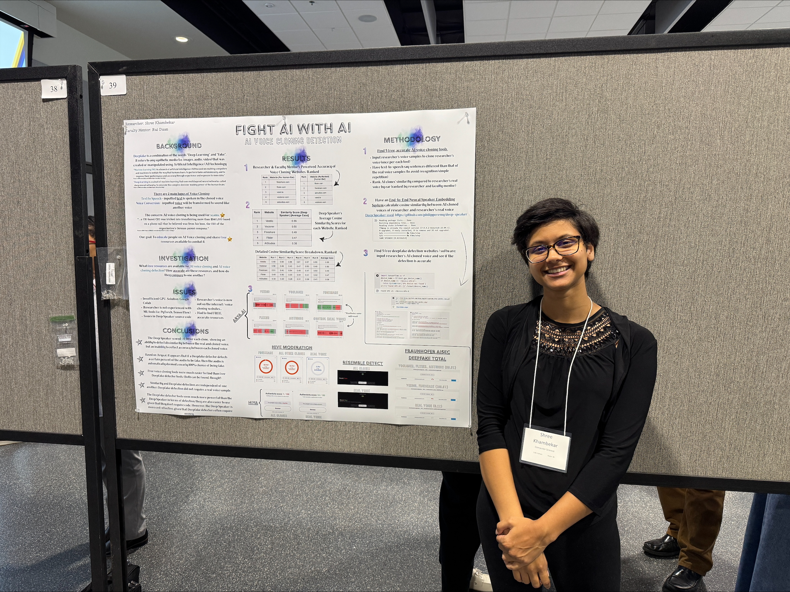

From January 2025 to April 2025, I investigated accesible AI methods for detecting deepfake voices under Dr. Rui Duan of UMKC's Computer Science Department. To do so, I evaluated free, effective voice-cloning and detection tools, including a neural speaker embedding system based on the Deep Speaker model (2017) and online deepfake detector tools (e.g., Hive). In order to implement the Deep Speaker—based model, I utilized PyTorch and TensorFlow on Google Colab. I then used the Deep Speaker—based model to compare real and synthetic voice samples from the same speaker to see how well it could detect lack of similarity between the two (i.e., how well it could tell the two apart). I then utilized the online deepfake detector tools to evaluate their effectiveness. While the Deep Speaker—based model was effective as it only detected similarity scores of up to 50%, the online deepfake detector tools detected AI-Generated voices with almost 100% accuracy. I had the honor of presenting these findings and my research as a whole at UMKC's 2024—2025 Undergraduate Research Symposium.
Questions? Contact me! :)
Email: sk4gn@umkc.edu